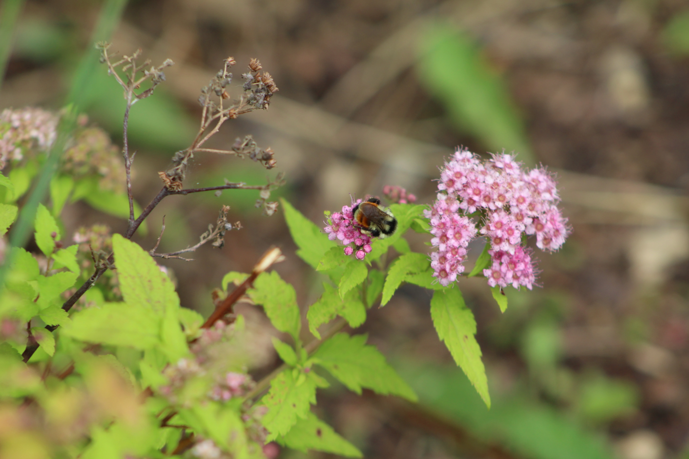
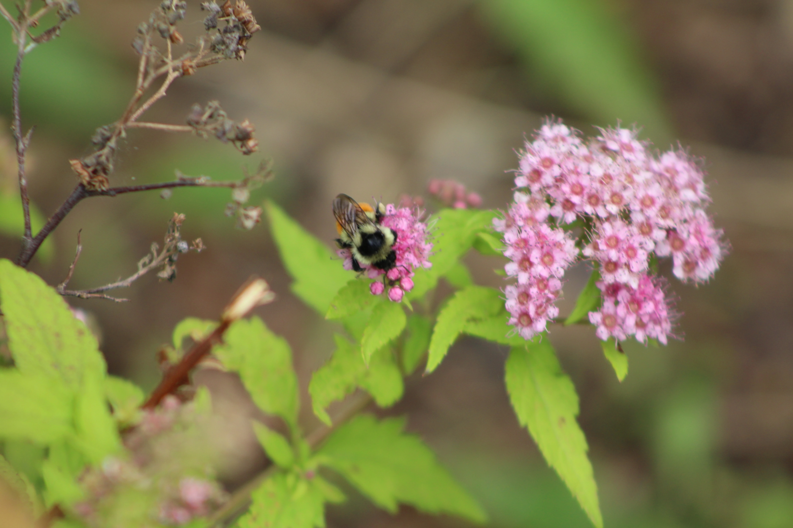
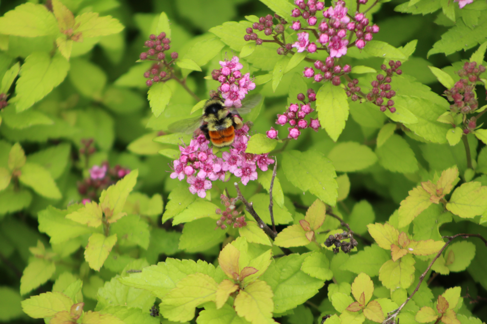
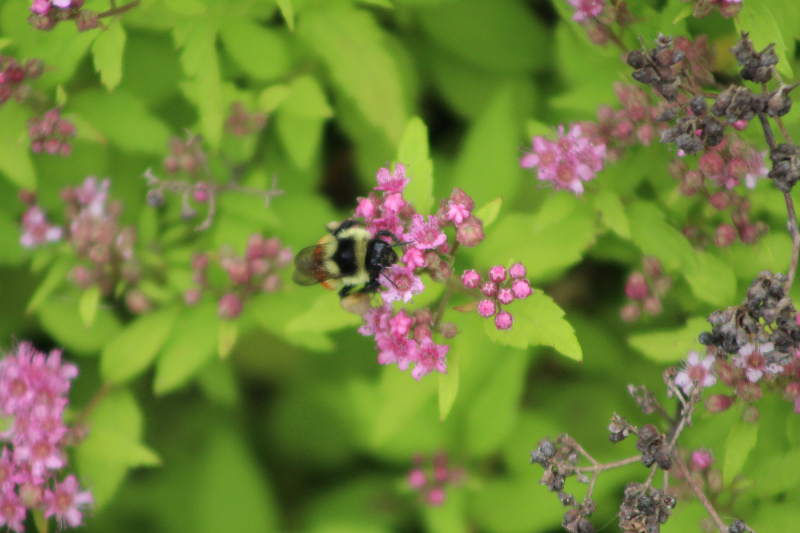
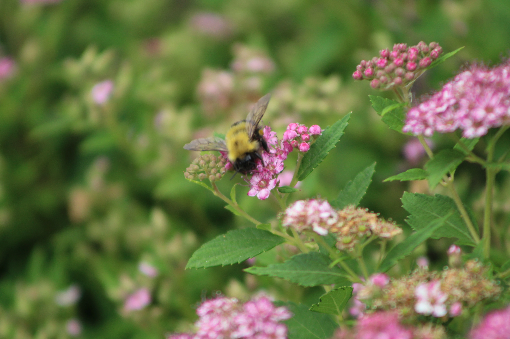
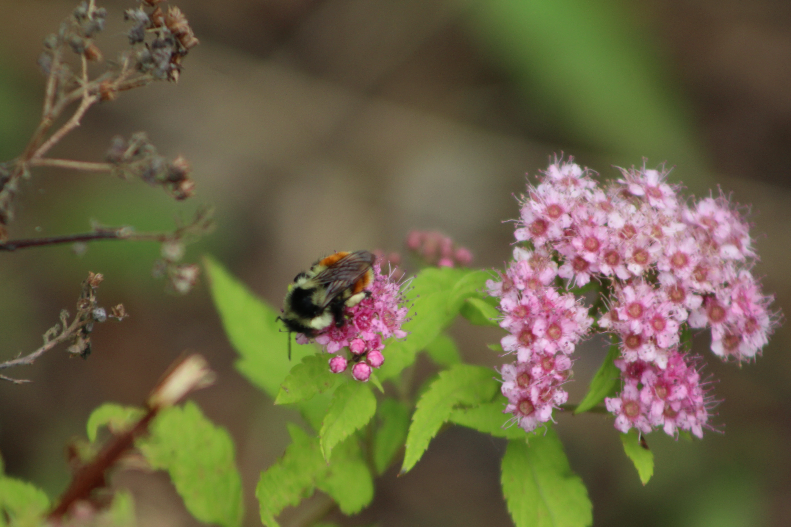
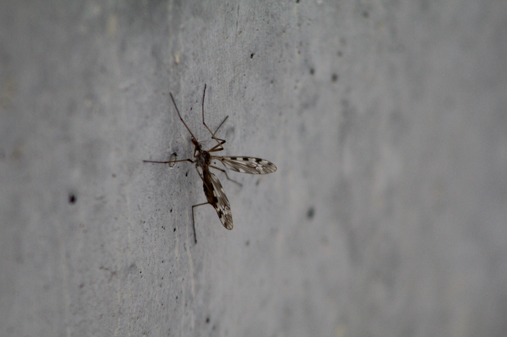

Macro Photography Part 1
Today I went out with the camera to practice macro photography, focusing on small insects and details I usually walk past without noticing.
Here’s a selection of shots from the session, roughly in the order they were taken:
Camera notes →







Still plenty to improve on technique and lighting, but it was a fun first session.
𓅓— END —𓅓